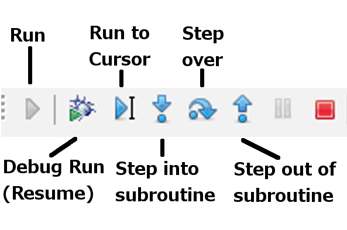

We will use Pyscripter here but should be very similar in most IDE's.
cd WinPython-32bit-2.7.6.2_incl_OPALS\PyScripter-v2.5.3\PyScripter open portable Pyscripter by starting "Start PyScripter.bat" File->Open->lecture2.py

Figure 1: Main Debugging Buttons in PyScripter
import pdb # imports the python debugger pdb.set_trace() # sets a breakpoint # does also work with ipython # import ipdb # ipdb.set_trace()
# Debugging var1 = "test" var2 = [1, 2, 3, 4] var3 = {"key1": 1, "key2": 2} print(var1, var2, var3) # set a breakpoint here, click on blue dot left of this line var1 = "modified" var3["key5"] = "a new value"
('test', [1, 2, 3, 4], {'key2': 2, 'key1': 1})
# String Formatting # handy for any kind of logging, etc. # mark replacement fields with curly braces arg = 'world' res = "hello {}".format(arg) print(res)
hello world
res = "{} and {}".format("a pear", "a tree") print(res)
a pear and a tree
# refer to arguments by index; possibly re-use them res = "{0} and {1}, {1} and {0}".format("a pear", "a tree") print(res) # refer to arguments by name; possibly re-use them res = "{good} is better than {bad}".format(good="some", bad="nothing") print(res)
a pear and a tree, a tree and a pear some is better than nothing
# practically anything can be an argument to format(.) value = 3.429188 res = "value is: {}".format(value) print(res) # custom formatting using format specifiers: # format specifiers follow a colon inside the curly braces # format as fixed point, with 3 digits after comma res = "value is: {:.3f}".format(value) print(res)
value is: 3.429188 value is: 3.429
# format left-aligned, centered, and right-aligned # with the given minimum width, # and a trailing line-break # prepare the template-string tpl = "{:<15} {:^5} {:>10}\n" # provide empty string to match all replacement fields res = tpl.format("Carl Friedrich", "", "Gauss") # re-use the template-string res += tpl.format("Alexander", "von", "Humboldt") res += tpl.format("Gerhard", "", "Mercator") print(res)
Carl Friedrich Gauss Alexander von Humboldt Gerhard Mercator
# multi-line strings can be formatted just as well. res = """# This might be a {}-file-header, # created by {} # on {}""".format("text", "me", "2014-02-18") print(res)
# This might be a text-file-header, # created by me # on 2014-02-18
Complete Format Specification Mini-Language: http://docs.python.org/2/library/string.html#formatspec
i = 0 data = [2, 4.5] while i < len(data): print(data[i]) i += 1
2 4.5
Python does loops a little different.
data = [ 1.73, 2.4122, 80, -4 ] # iterate over elements, using keyword 'in' for elem in data: print(elem)
1.73 2.4122 80 -4
data = [ 1.73, 2.4122, 80, -4 ] datanames = ["number 1", "number 2", "number 3", "number 4"] for number, name in zip(data, datanames): print(name, number)
('number 1', 1.73)
('number 2', 2.4122)
('number 3', 80)
('number 4', -4)
d = {"key1": 1, "key2": 2, "key3": 3} for key in d: print(key)
key3 key2 key1
d = {"key1": 1, "key2": 2, "key3": 3} for key, item in d.iteritems(): print(key, item)
('key3', 3)
('key2', 2)
('key1', 1)
range and xrange can be addressed with (start, stop, step)
print("range") for i in range(1, 10, 2): print(i) print("xrange") for i in xrange(5): # only python 2 print(i)
range 1 3 5 7 9 xrange 0 1 2 3 4
l = ["a", "b", "c", "d"] for i, item in enumerate(l): print(i, item)
(0, 'a') (1, 'b') (2, 'c') (3, 'd')
dataset1 = [ 1.73, 2.4122, 80, -4 ] # if/else blocks for d in dataset1: if d > 3: res = ">3" else: res = "<=3" print(res)
<=3 <=3 >3 <=3
#################################################################### # Mini Exercise # Try to format and print only the positive numbers in 'dataset1', # with 1 number on each line, # and with 2 digits after the comma ####################################################################
Function is a way to package code so that it is reusable.
def classify(dataset, threshold): """ classifies dataset into small and large class using the threshold Parameters ---------- dataset: list list to classify threshold: float threshold to use for classification Returns ------- results: list containing True or False """ results = [] # create an empty list for data in dataset: results.append(data > threshold) return results
dataset1 = [1.73, 80, 2.4122, -4] res = classify(dataset1, 2) print(res) print(classify(dataset1, 1))
>>> [False, True, True, False] [True, True, True, False]
There are several ways to document code in Python.
Scientists often use the numpy Documentation style.
There is also PEP 257 Python Docstring Standard
Be Consistent
Documentation is useful for autocompletion in IDE
Generation of HTML or PDF Documentation using Sphinx.
def classifydefault(dataset, threshold=2.5): """ classifies dataset into small and large class using the threshold Parameters ---------- dataset: list list to classify threshold: float, optional threshold to use for classification Returns ------- results: list containing True or False """ results = [] # create an empty list for data in dataset: results.append(data > threshold) return results
dataset2 = [1.73, 80, 2.4122, -4, 2.6] print(classifydefault(dataset2))
[False, True, False, False, True]
Functions/Classes and Packages/Modules define their own local namespace.
variable = "I am Global" def func(): variable = "I am Local" print(variable) print(variable) func()
I am Global I am Local
Careful when changing a list in a function
l = [1, 2, 3] def func(ls): ls.append(4) print(l) func(l) print(l)
[1, 2, 3] [1, 2, 3, 4]
#################################################################### # Mini Exercise # Write a function that classifies strings by length # inputs should be a list of strings, and a threshold # specifying the number of characters # The output should be a list containing the strings "shorter" or "longer" # lets ignore strings of length = threshold for now print(len("test")) # hint # list of random strings test_strings = ["faucal" ,"fiddling" ,"instil" ,"blake" ,"profanely" , "bootblack" ,"decongest" ,"interest" ,"arrowy" ,"eponymic"] ####################################################################
4